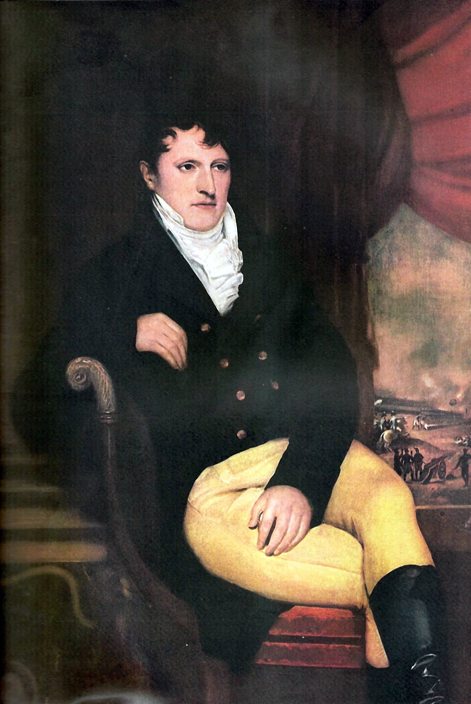

Ha muerto Belgrano, y la ciudad casi no lo advierte
El creador de la bandera falleció esta mañana en la casa paterna, pobre hasta el punto de pagar a su médico con su reloj. Buenos Aires, hundida en el caos de tres gobernadores en un solo día, apenas tuvo tiempo para su mejor hijo.

A las siete de la mañana de hoy, en la misma casa frente al convento de Santo Domingo donde había nacido hace cincuenta años, murió el general Manuel Belgrano. Lo consumía la hidropesía desde hacía meses, agravada en los caminos del Alto Perú y en tantos años de servicio sin descanso ni paga. No tenía con qué remunerar al médico Redhead, que lo asistió hasta el final: le entregó su reloj de oro, lo único de valor que le quedaba. El hombre que manejó caudales de ejércitos enteros murió sin un peso, y ésa es quizá su hoja de servicios más limpia.
La ciudad que debió cubrirlo de honores no estaba para funerales: en esta jornada aciaga, que las gacetas ya llaman el día de los tres gobernadores, Buenos Aires tuvo a la mañana un gobierno, al mediodía otro y al anochecer un tercero, mientras las montoneras de las provincias acampan a las puertas y cada cabildo tira para su lado. En medio de semejante vergüenza, el cortejo del creador de la bandera pasó casi inadvertido; un solo periódico de esta capital habrá de registrar su muerte.
Sus últimos meses fueron un calvario a la altura de su vida. Enfermo desde las campañas, dejó el mando del Ejército del Norte y emprendió en enero el regreso desde Tucumán, en silla de manos primero y en carreta después, por un país que se deshacía: en febrero, las montoneras de López y Ramírez voltearon en Cepeda al gobierno nacional, y ya no hubo directorio, ni congreso, ni sueldo que llegara a nadie. De los cuarenta mil pesos con que la patria premió sus victorias de Tucumán y Salta, Belgrano no gastó uno en sí mismo: los donó íntegros para fundar cuatro escuelas en los pueblos pobres del norte, escuelas que los gobiernos, dígase con vergüenza, todavía le deben.
Junto a su cama estuvieron hasta el final el doctor Redhead, su confesor y unos pocos fieles; los que lo oyeron aseguran que entre sus últimas palabras estuvo un «¡Ay, patria mía!», y no hay motivo para no creerles, porque murió como vivió: pensando en cuenta ajena. Para la lápida no hubo mármol en las arcas: se labró con la tabla de una cómoda de la casa, y con ella fue enterrado en el atrio de Santo Domingo el hombre que pudo ser rico y eligió fundar escuelas y periódicos. El único diario que registró su muerte, el del padre Castañeda, tuvo al menos el tino de la vergüenza: le reprochó a la ciudad entera semejante olvido.
Abogado que se hizo general por necesidad de la patria, perdió batallas y ganó las dos que no se podían perder, Tucumán y Salta, desobedeciendo órdenes de retirada. Educó, fundó escuelas con el dinero de sus premios, escribió sobre agricultura y comercio cuando nadie escribía, y dio a estas provincias el paño celeste y blanco bajo el que hoy pelean. La posteridad, que suele ser más justa que los contemporáneos, tendrá con Belgrano una deuda larga. Que este día de junio, gris y desapacible, quede al menos anotado para que alguien la cobre.